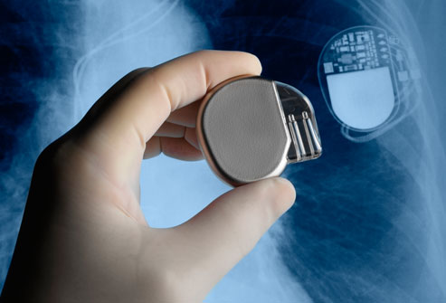

Collections
Collections & Pacemaker


All programming languages will have support for a range of common data structures. Unlike typical dynamic programming language, collections are implemented as a standard library in Java (as opposed to being built in). We will survey the major features of this library, focusing on the principle interfaces and implementations. There is considerable more to collections, which should be investigated independently.
Pragmatic Testing

One way of becoming familiar with TDD is to explore some simple examples of various strategies that might be employed in some simple examples. Here we look at useful examples from the Pragmatic series - which laid out much of the early exploration of TDD.
Pacemaker with First Tests

We revise the initial pacemaker lab to use collections and a simple API
Pacemaker with Fixtures + Tests

We try to apply some of these practices to the Pacemaker app we are building the labs. In general many of the tests are straightforward but we strive to make elegant use of fixtures.
TDD-02

Evolve the application developed in lab01 with additional capabilities
TDD-03

Expand the pacemaker model to include Location and Activity classes. Introduce a set of tests to verify the behavior of the model.